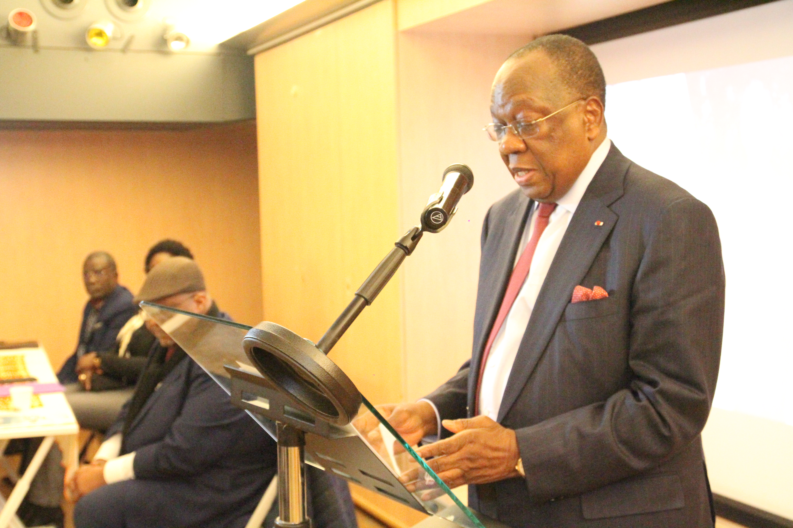

Réforme de l'éducation : un impératif pour l'avenir de la Guinée
L'éducation est le pilier sur lequel repose l'avenir de toute nation. En Guinée, malgré des progrès notables ces dernières années, notre système éducatif fait face à de nombreux défis qui nécessitent une réforme en profondeur. Cette réforme n'est pas seulement souhaitable, elle est impérative pour assurer un avenir prospère à notre jeunesse et à notre pays.
Les défis actuels
Parmi les principaux défis auxquels notre système éducatif est confronté, on peut citer :
- Un taux d'alphabétisation encore trop bas
- Des infrastructures scolaires insuffisantes et parfois vétustes
- Un manque de formation et de valorisation des enseignants
- Des programmes scolaires qui ne sont pas toujours en adéquation avec les besoins du marché du travail
- Des inégalités persistantes entre zones urbaines et rurales
Les axes de réforme proposés
Face à ces défis, l'UNPG propose une réforme ambitieuse articulée autour de plusieurs axes :
1. Modernisation des infrastructures
Il est crucial d'investir massivement dans la construction et la rénovation des écoles, en mettant l'accent sur l'équipement en matériel pédagogique moderne, y compris les outils numériques.
2. Formation et valorisation des enseignants
Nous devons revaloriser le métier d'enseignant, tant sur le plan de la formation initiale et continue que sur celui de la rémunération, pour attirer et retenir les meilleurs talents.
3. Révision des programmes
Les programmes scolaires doivent être actualisés pour inclure des compétences essentielles pour le 21e siècle, telles que l'esprit critique, la créativité, et la maîtrise des technologies numériques.
4. Promotion de l'éducation inclusive
Il est essentiel de mettre en place des mesures pour réduire les inégalités d'accès à l'éducation, notamment entre les zones urbaines et rurales, et pour les filles et les enfants en situation de handicap.
5. Développement de la formation professionnelle
Renforcer les filières de formation professionnelle et technique pour mieux répondre aux besoins du marché du travail et favoriser l'insertion professionnelle des jeunes.
L'importance de l'engagement collectif
La réussite de cette réforme nécessite l'engagement de tous les acteurs de la société guinéenne : gouvernement, enseignants, parents, élèves, société civile et secteur privé. C'est un investissement pour notre avenir commun qui demande des efforts soutenus et une vision à long terme.
À l'UNPG, nous sommes convaincus que l'éducation est la clé du développement durable de notre pays. En investissant dans l'éducation aujourd'hui, nous préparons une Guinée plus forte, plus prospère et plus équitable pour demain.